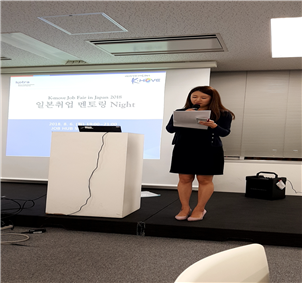

JAPAN
#Activity

A. K-move interview coaching
✓ 방문 일자 : 7월 5일(수)
✓ 담당자 : 김진희 과장
Part 1. 면접 시 중요한 포인트
일본 기업은 한국 기업과 다르게 개인의 경쟁력이 아닌 잠재력을 많이 본다. 잠재력이란 개념이 매우 추상적인데, 이것은 기업의 이념이나 추구하는 방향에 따라 기준이 달라진다. 따라서 기업 분석이 중요하다.면접에 가장 중요한 요소는 기본 인성과 태도이다. 따라서 일본 기업과 면접 시에는 첫인상이 매우 중요하다. 일본은 예절을 매우 중시하는 풍토가 있고, 이에 따른 면접 예절을 미리 익히는 것이 중요하다. 또한 일본어를 많이 숙달하는 것이 매우 중요하다.
일본 기업은 현재 고용할 인재가 없어 고용난에 시달리고 있다. 따라서 현재의 일본은 의사소통이 가능하면 기술적인 능력이 부족하더라도 그 부분은 따로 교육시킬 의사가 있음을 분명히 하고 있다. 가장 중요한 것은 기업과 고객에게 원활한 의사소통을 할 수 있는 능력이다. 따라서 면접 시에도 이런 능력을 어필하는 것이 굉장히 중요하다.면접 시에는 기업 분석을 철저히 하는 것 또한 굉장히 중요하다. 기업 분석을 충분히 해야만 예기치 않은 질문에 면접관에게 만족할 만한 대답을 할 수 있기 때문이다. 암기 위주의 대화는 지양해야하며 말을 길게 하거나 예쁘게 꾸미기 보다는 핵심만 찌르는 것이 더욱 효과적이다.
Part 2. 예상 질문 답변하기
◇자기 PR시간 :
밝은 표정과 씩씩한 목소리 바른 자세가 무엇보다 중요하다. 자기 발표 할 때에는 어떤 가정에서 자랐는지에 대한 부연 설명을 하는 것보다 자신이 누구인지, 어떤 사람인지, ‘나’라는 사람에 대해서만 말하는 것이 중요하다.
◇인생에서 가장 절망적인 경험은? :
본인이 겪은 후 변화가 일어났거나 결과가 생긴 내용을 말해야한다. 이야기는 부풀릴 필요가 없다. 왜냐하면 위 질문은 위기대처능력을 보는 것이기에 솔직하게 이야기 하는 것이 중요하며 사소한 것을 말해도 상관없다.
◇장점과 단점을 말해주시오 :
단점과 약점의 구분을 명확히 하는 것이 중요하다. 단점은 치명적이지 않고 본인의 의지로 고칠 수 있는 것 이여야 한다. 장점과 단점의 이야기 비중은 3:1 적당하다.
◇왜 우리 기업에 지망을 했는가? :
위 질문은 면접관이 면접자의 기업 관심도를 묻는 질문이다. 기업 분석을 정확히 하지 않으면 면접관이 원하는 대답을 할 수 없다. 기업 분석은 좋은 취업을 위해 필수적이다. 기업의 홈페이지를 통해 기업 비전이나 이념, 인재상을 참고하는 것이 중요하다.
◇10년 후의 커리어 플랜 :
직급이나 급여에 과한 집착은 하지 않는 것이 좋지 않다. 회사의 플랜에 맞춰 본인의 커리어 플랜을 짜는 것이 중요하다.
B. Mentoring Night for Employment in Japan

◇정보라 연사 인터뷰
Q1. 일본 기업들은 학력을 보는가?
A1. 한국의 대학교는 일본 기업에서 큰 지표로 보지 않는다. 일본 취업은 학력으로부터 한국보다 조금은 자유롭다.
학력보다는 본인의 스토리와 비전에 중점을 둬라.
특히 비전을 진지하게 생각하는 사람이 취업하기에 유리하며 앵무새 같이 자신의 이야기가 아닌 남의 이야기를 흉내만 내는 사람은 면접에서 반드시 걸러진다.
추상적인 말이라고 생각할 수도 있지만 실제로 비전과 목표를 갖고 있는 사람만이 면접관의 마음을 울릴 수 있다.
A2. 이미 취미로 인해 청해 및 기본기는 완성되었다. 진지하게 공부한 것은 대학원 진학을 목표로 공부하기 시작했다.
관심을 갖고 있던 언어였기에 영어에 비해 성장차가 컸다.
일본 문화에 대한 호감이 있다면 관심사를 찾고 관심사를 통해 언어를 배우는 것이 중요하다.
개인적으로 일본어 능력은 좋으면 좋을수록 좋다고 생각하며 기업에서 요구하는 일본어 능력은 비즈니스가 가능한 일본어 능력인 것 같다.
마지막으로 일본어를 포함한 언어를 공부하는 좋은 방법으로는 주변 환경을 바꾸는 것이 가장 효과적이라고 생각한다.
◇강소연 연사 인터뷰
Q1. 일본 기업은 외국인 근로자를 어떻게 바라보는가?A1. 일본 기업은 근로 기준을 외국인과 내국인의 차이를 두지 않는다. 차별을 두지 않는 것이 오히려 힘들었다.
왜냐하면 일본인과 문화적, 언어적 차이를 인정하지 않고 일본인과 동일한 선상에서 경쟁하기 때문이다.
또한 한국인 근로자라고 차별은 없으나, 외국인에 대한 막연한 기대는 분명 존재한다.
A3. 후회는 없다. 앞서 말했듯이 선생님은 내 천직이 아니다.
물론 친구들이 방학 때마다 해외여행을 가는 것은 부럽긴 하다(웃음). 하지만 나는 지금의 일이 적성에 맞다.
만약에 내가 전공을 쫓아 선생님을 했다면 지금처럼 열정적으로 일하지 못했을 것이며 지금과 같은 급여도 받지 못했을 것이다(웃음).
사람은 자기의 적성에 맞는 직업을 찾는 것이 굉장히 중요하다. 빠르면 빠를수록 좋다고 생각하며 자신의 적성을 찾았다면 주변의 눈치는 신경 쓰지 않아도 된다.
◇윤준영 연사 인터뷰
Q1. 직장이 3번 바뀌었다고 말씀해주셨다. 이직을 하신 경위와 이직 후 겪은 경험을 알고 싶다.A1. 첫 번째 직장은 흔한 IT 기업 이였다. 나는 IT 기업의 신입으로 해야 할 업무들을 충실히 했다.
선배들께 많이 깨지면서 성장했고 지금도 그 때의 기억이 아찔하지만 지금의 나를 만들 수 있는 좋은 시간 이였다고 생각하고 있다. 개인적으로 IT 분야는 많은 공부의 양을 필요로 하는 분야이다.
학교 공부만 마치고 온 신입에게는 새로 배워야 할 분야가 많은데, 이 부분은 신입 때 많이 힘들지만 참고 견디어 성장하는 것이 중요하다,
첫 직장도 좋은 직장 이였으나 스카웃을 제안한 기업에 비해 급여가 높지 않았다. 연봉의 인상이 이직을 결심하게 되었다. 현재 일본 IT 시장은 다른 산업 시장들과 다르게 인재가 부족하고 그에 따라 개인의 능력이 좋으면 연봉 협상을 유리하게 할 수 있다. 두 번째 이직은 기업에서 진행하던 프로젝트가 다른 기업으로 넘어가면서 같이 일하던 선배가 해당 프로젝트로 창업을 하지 않겠냐고 제안을 했다.
정확하게는 이직이 아닌 창업을 하면서 다니던 직장을 그만 둔 경우이다. 창업을 하면서 여러 고충도 많았지만 개인적으로 개발자는 적정한 수준의 레벨을 올린 다음 창업 하는 것도 나쁘지 않다고 생각한다.
왜냐하면 남의 돈을 벌어주는 것이 아닌 내가 직접 개발하고, 내가 개발한 것으로 직접 돈을 버는 것은 마인드의 차이를 만들기 때문이다.
C. VSN corporate visit
✓ 방문 일자 : 8월 7일(화) ✓ 담당자 : Akihiro Hirata, Yuka Igawa
◇간담회 내용
VSN은 IT와 기계, 전기 등의 전문 지식을 가지고 있는 엔지니어를 파견하는 사업을 전개하고 있다.
2011년도부터 VSN의 독자적인 서비스인 “가치 사슬 혁신”이라는 컨설팅 서비스를 제공하고 있다. “가치 사슬 혁신”은 엔지니어링 뿐 만 아니라 고객의 사업 과제를 주체적으로 발견하고 해결해 나가는 서비스이다.
VSN의 그룹 이념은 인재창조와 배출을 통해 사람과 사회에 공헌함으로써 기쁨을 극대화를 추구하는 것이다. VSN은 직원의 능력을 끊임없이 개발해 개인의 가치를 높이고, 이러한 인재를 지속적으로 육성해 사회 전체의 발전에 이바지 하는 것이 이념이다.
◇GIT REVIEW
VSN은 3500명 이상의 근로자와 연 250억엔 이상의 매출을 올리는 IT, 제조, 컨설팅 분야에 중견기업이다.
Get-IT는 VSN의 홍보팀과 인사담당자, 엔지니어와 간담회 및 인터뷰를 진행할 수 있었다.
Get-IT는 VSN의 텐노지 교육 센터를 방문해 홍보팀의 안내를 통해 텐노지 교육 센터를 견학할 수 있었다.
VSN은 인재 육성을 통한 인적 자원으로 고객에게 IT 기술 개발, 제조, 컨설팅 등으로 업무 프로세스를 개선을 통해 이윤을 창출하는 기업이다.
따라서 VSN의 텐노지 교육 센터는 VSN의 자원을 생산하는 공장과 같은 곳이였다. VSN에는 이곳의 투자를 아끼지 않고 있으며 직원들 또한 기업의 이념대로 이곳에서 스스로 자기계발을 하고 있었다.
Get-IT는 VSN의 신입사원 채용 조건이 궁금했다. VSN은 간담회를 통해 직원 채용의 기준으로 잠재력을 최우선으로 본다고 직접 말했다. 잠재력을 파악하는 근거로는 기업의 이념에 부합하는 지를 본다고 했다. 또한 개인의 ‘직무적 능력’ 보다는 ‘커뮤니케이션 능력’을 더 우선시 한다고 말했다.
VSN이 말하는 ‘커뮤니케이션 능력’이란 단순히 언어를 잘하는 것이 아니라 기업과 고객 사이에서 의사 소통을 잘하고 의견 조율을 원활히 진행하는 것을 말한다. 따라서 Get-IT는 좋은 직장에 취업하기 위해서는 단순히 언어 공부만 하는 것이 아닌 전공(경영관련)도 소흘히 해서는 안됨을 느꼈다.